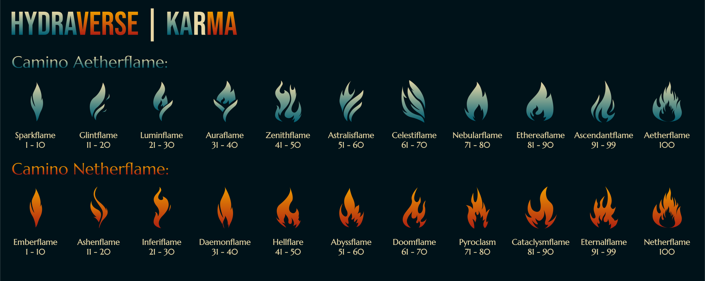
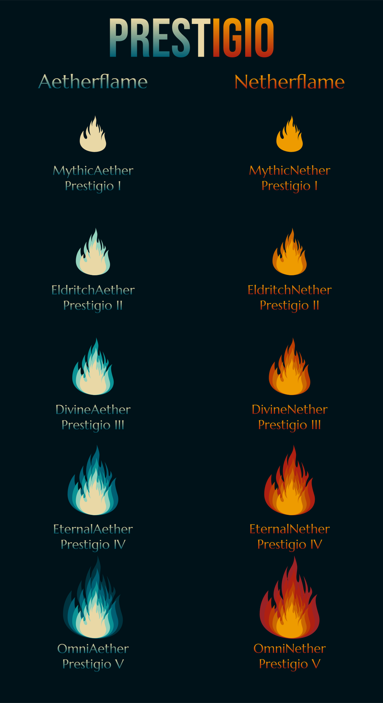

HYDRAVERSE
KARMA
El KARMA en HYDRAVERSE es un sistema de progreso que define tu destino dentro del servidor.
Desde el inicio, debes elegir entre dos caminos:
Aetherflame - El sendero del equilibrio, el dominio y la habilidad.
Netherflame - La senda del caos, el poder y la destrucción.
Cada camino ofrece mejoras ilimitadas cada 10 niveles hasta alcanzar el nivel 100, donde desbloquearás el título definitivo. Luego, podrás continuar tu evolución con prestigios, que te otorgarán nuevas habilidades únicas por cada nivel de prestigio, desde “Prestigio I” hasta “Prestigio V”.
Para subir de nivel, debes ganar “KP” KARMA PUNTOS completando Misiones, Competencias, Eventos, progresando y/o haciendo un sacrificio de tus puntos de XP dentro del servidor para aumentar tus puntos de nivel de KARMA. Tu elección es permanente, y cada camino tiene habilidades completamente diferentes.
¿Cómo subo el nivel de KARMA?
Por cada 100 KP aumentas el nivel de KARMA hasta el nivel 99. Del nivel 99 al nivel 100 se necesitan 1000 KP.¿Cómo subo el nivel de Prestigio?
Después de estar en el nivel 100 de KARMA, se desbloquea el Prestigio. Para aumentar el Prestigio, debes conseguir 500 KP y completar una Misión/Evento/Competencia con la mejor clasificación. Se debe repetir por cada nivel de Prestigio.¿Cómo sé cuántos puntos de KARMA tengo?
El Developer es quien suma los KP de cada jugador y los sube a un dominio en GitHub para que puedan ver su progreso actualizado de forma dinámica.¿Cómo hago el sacrificio de mi XP para obtener puntos de KARMA?
El sacrificio debe hacerse frente a un testigo y contar con pruebas de la cantidad de niveles sacrificados. El jugador debe pagar con su muerte dentro del SANTUARIO DEL KARMA una vez que esté construido. Mínimo a sacrificar: 30 LV 1 LV = 0,5 KP Ver mi camino
